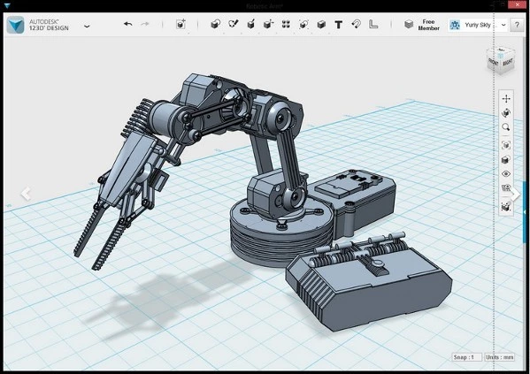

2016.1.23 - 25 就在 NCTU 國立交通大學
IoT的實作與相關應用...
密碼學 (密碼的意義、RSA) ...
3D繪圖...
| 1/23 | 1/24 | 1/25 | |
|---|---|---|---|
|
0800 |
課程2 | 交大參訪 | |
|
0900 |
|||
|
1000 |
課程3 | ||
|
1100 |
會合 | ||
|
1200 |
吃飯，小隊時間 | ||
|
1300 |
大地遊戲 | 課程4 | 結業式 |
|
1500 |
課程1 | 解密遊戲 | |
|
1800 |
團對抗隊 | 賭遊戲場 | |
|
2100 |
|||